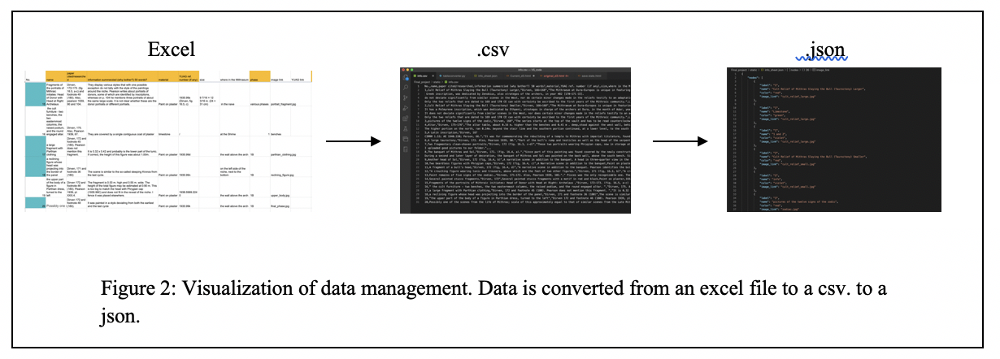
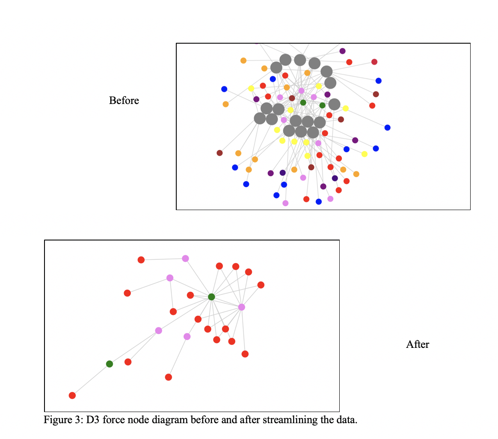

This is a test
D3 Data Visualization The data visualization proved to be more difficult than anticipated and accounted for a large chunk of my time spent on this project. The students working on the humanities side of the project put together a great excel sheet of information on 20 different objects at the YUAG that were excavated from the mithraeum at Dura Europos. Grateful for their work, I set out to create an interactive representation of the data that would allow users to recognize trends. When considering this task, the D3 data visualization that we used in the intro to web development immediately came to mind, but the force node diagram needed tweaking before it was suitable for our set of information. Observing how the shape of the text changes to be less of a congested block in the figure below shows how much cleaning goes into the data before it can be put into the D3 visualizer.
I started by downloading the excel file as a csv and modifying the table2graph.py converter from the problem set so that it would convert the information in the csv to a usable json file that can be graphed using the D3 program. This worked technically, but visually it was not appealing. There were an overwhelming number of nodes of about a dozen different colors. Most of them were only connected to one other node and many just floated away upon loading the graphic because they had no edges attached to them. The issue was that the sheet held a lot of information, information that was important for the site, but didn’t need to be presented in the graphic. I met with Lauren from the Humanists and we decided to keep the 20 items, but to narrow down the properties that were illustrated in the graphic to just phase and material. I felt as though the resulting graphic holds enough information that ties the objects together without overwhelming the user with tons of colors on an untraceable web. Figure 2 below shows the force node diagrams before and after the unnecessary data was cut out.
 Photogrammetry Our group used photogrammetry to capture the Yale University Art Gallery Mithraeum scene and some of the artifacts found in the excavation that Yale had access to. We blocked a few days in our work schedule and dedicated them solely to capturing photos of the objects and rendering them in agisoft. One of the issues we ran into was capturing all the parts of the mithraeum scene. It is such a big structure that we would often miss a certain corner or had something in the picture that wasn’t supposed to be there. We also had this issue with some of the objects we captured at West Campus. Luckily the Agisoft premium membership allowed us to delete edges and faces. The objects captured here would be instrumental to telling the story of the Mithraeum in Unity and on the website. Why a Game Engine for the Dura Experience? The group talked about the several ways in which we could bring the Mithraeum at Dura Europos to real life. We knew we wanted to combine the photogrammetry, some of our own artistic capabilities, and the plans from the final phase of the excavations. But we spent a lot of time thinking about not only how these aspects would interact with each other, but how the user would interact with the scenes. We originally The group talked about how we could bring the Mithraeum at Dura Europos to real life. After researching, we initially talked about making a move in Blender that moved through our recreation of the Mithraeum. This recreation would combine our Photogrammetry of the Mithraeum at the Yale University Art Gallery and our 3D model of the temple-like structure that held the altar featured at the Art Gallery. In the Blender video, though, we felt like we would be missing that feature of interactivity. We wanted the user to feel like they were moving through the Mithraeum in its final building phase. I’ve always wanted to learn some game development, so I recommended we could try it to get that user feeling we were going for. Learning Unity Playing video games as a child, I’ve always wanted to create my own. I had never really had the opportunity to do so between school and internships. This project finally gave me that opportunity to do so. I had the choice to use any game engine; I had considered engines like unreal, Godot, and Löve, amongst many others, but I decided to go with Unity because of time constraints. Unity is one of the most widely used game engines, and outside of the endless list of documentation on its website, it also has a large and beginner-friendly community. Learning Unity was relatively straightforward. I watched many videos on Youtube to get a general idea of workflow. While watching these videos, I found a fantastic Youtuber, who no longer makes videos on Youtube, named Brackeys. Brackeys no longer makes Youtube videos, but his content and communities on subreddits are still very active. Following a few tutorials of his, I got the basics of player movement, level design, and 3D modeling. I also watched YouTubers like Dani, which taught me about many of Unity’s other features, like the particle system – which at the beginning of this project, I did not think I would need, but as time went on, I realized how important this would be to simulating fire, candles, and other forms of lighting. Keeping all this in mind, I now needed to do a quick crash course in C#, which would be helpful in actually coding all the features I learned in the Youtube videos. Luckily, most of Yale’s instruction is in C, so I had a baseline idea as C# is a derivative language, and its memory management system is much easier to understand than coding in C. The Dura Experience After countless hours of researching, I felt ready to make the game. I went in pretty naïve, thinking using Unity would be as straightforward as the videos made it. But my biggest downfall actually came from C#. As said before, I thought it would be straightforward, but how the code and the game engine interacted made that process difficult for me. You would create public variables in the code and assign those variables to various objects with Unity. How you would set variables to methods in Unity made coding processes like fundamental physics extremely hard to code. Though Unity is known for having physics built into it, understanding how physics works and how objects interact with each other is not straightforward. Getting the character to jump is an example of one of the hardships I went through when trying to get the character to move. To jump, the character has a positive acceleration in the air that slows down until it gets negative so the character can start descending. But once the character hits the ground, the acceleration is still negative. To combat this, I had to create an object that would go at the character’s feet to check if the character is on the ground, which would then set the character’s acceleration to 0 again. After getting the character to move, I put together the 3D scene in Unity. There were several parts to the 3D scene that required work from other team members. Tianyi and Karen worked on recreating the 3D Mithraeum. They used the Photogrammetry model that Cameron and I had made using the scene in the Art Gallery and referencing the way the Mithraeum was drawn when it was discovered during the excavations. There have been multiple 3D scenes constructed of the Mithraeum in the past. But what separates ours from the others is our use of lighting in the temple and the textures present. The photogrammetry of the scene also allows a new depth for the texture, actually showing how the stone and plaster are embossed in the scene. From the research the computer science did, they used stone on the floor and adobe bricks for the temple itself. We tried to replicate this in the textures we used. One thing we could have definitely done better was picking the textures, though. We were limited on the amount of time we had for this project, and it would’ve been super cool to play with the materials and shaders in Unity and Blender. One thing we also did, which I believe could’ve been done differently, was the surrounding scene. On my own, I thought it would be really interesting to put the temple in its context. The temple is in the city’s northwest at a bend in the walls. Though I did not do too much research into this, I tried to replicate it. The walls were about 7 meters high from research, and I tried to replicate that about the character. I also could not find much about the walls of the towers, so I tried my best to replicate them based on the very little information that I could find on the walls. For the materials, I tried a mix of the same adobe bricks and the stone brick type that I had previously used throughout the project. Again I don’t think these materials were necessarily the best representation of what was used, but I think it is much better than what is out there. I also took a look at the surrounding buildings on the map and tried my best to show their general location. The walls and these extra buildings have the dual purpose of the level design that I learned in the game tutorials. Many game developers recommend using things from the surrounding scene to create boundaries in-game levels. Using this logic, I used the walls and the surrounding buildings to create a border for the player. The final touch to the scene was the lighting. Through my research, I found out that the services the Mithraeum would hold would take place throughout the day. Therefore the light outside did not matter too much to me. We know that regardless it could be pretty dark in the temple because of the lack of windows. There was probably some use of oil lamps, candles, or torches to combat this. As a group, we had to decide not only on the light source in the Mithraeum but also on how we constructed the light source. One thing we could have done was requested an oil lamp to capture in photogrammetry, but unfortunately, we did not have enough time towards the end of the project, so we decided to use the candles and torches. The candles that the Romans used were most likely made of tallow. Tallow was very widely available in the ancient world; therefore, it wouldn’t be surprising to see tallow candles in the ancient world. We 3D modeled the candles and wick in Blender and created our texture mimicking the tallow candles we had seen online. We found pictures of flames and used the unity particles, and we animated the flame to make it seem like it was moving. And then, we added lights on top of the candle to simulate the light coming from the flame, and this light shined on the photogrammetry scene. We then added torches on the side for general light. A similar process was used for the torch compared to the construction of the candle. It made a difference though we used Unity’s particle system to create fire from scratch. We had trouble figuring out what the torches looked like and where they may have been if there were torches in the Mithraeum. But this raises an important ethical question – do the artistic liberties we have taken creating this Mithraeum impact a general public understanding of what the Mithraeum may have looked like? To answer this question, historians make conjectures all the time. Between our research as computer scientists and art historians, we made these conjectures based on the works of previous historians. We know there is gold gilding and that candles were used in the Mithraeum. Though we aren’t so sure about the torches, there had to be some other lighting in the Mithraeum of some capacity as there are very tiny windows in the Mithraeum.